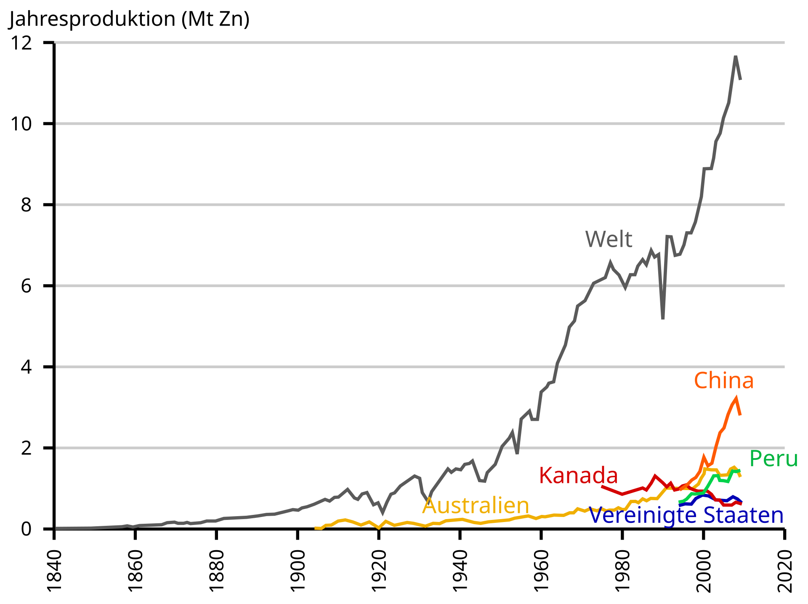

Die Webseite ist derzeit noch in Arbeit. Einige Features funktionieren nur eingeschränkt oder gar nicht, hauptsächlich JavaScript-basierte, interaktive Funktionen.
 Zink als Würfel, kristallines Bruchstück und sublimiert.
Zink ist ein bläulich-weißes, unedles Metall.
Unedel bedeutet, dass es leicht korrodiert, also „rostet“. Anders als zum Beispiel Eisen, das so lange mit Sauerstoff reagiert, bis es komplett durchgerostet ist, bildet sich bei Zink an der Oberfläche eine Schicht aus quasi „Zinkrost“, der das restliche Metall vor weiterer Korrosion schützt.
Diese Schicht besteht aus Zinkoxid und Zinkcarbonat und hat die Summenformel Zn5(OH)6(CO3)2. Sie ist so witterungsbeständig, dass man Zink deswegen im Rostschutz einsetzt, zum Beispiel beim Verzinken von Eisen.
Zink gehört zu den Übergangsmetallen, hat wegen seiner abgeschlossenen d-Schale aber eher die Eigenschaften von Erdalkalimetallen (Elemente der 2. Hauptgruppe, wie Beryllium oder Magnesium).
Feines, nicht stabilisiertes Zinkpulver kann sich an der Luft oder bei Kontakt mit Wasser spontan entzünden, man spricht deshalb von einem pyrophoren Feststoff.
Zink als Würfel, kristallines Bruchstück und sublimiert.
Zink ist ein bläulich-weißes, unedles Metall.
Unedel bedeutet, dass es leicht korrodiert, also „rostet“. Anders als zum Beispiel Eisen, das so lange mit Sauerstoff reagiert, bis es komplett durchgerostet ist, bildet sich bei Zink an der Oberfläche eine Schicht aus quasi „Zinkrost“, der das restliche Metall vor weiterer Korrosion schützt.
Diese Schicht besteht aus Zinkoxid und Zinkcarbonat und hat die Summenformel Zn5(OH)6(CO3)2. Sie ist so witterungsbeständig, dass man Zink deswegen im Rostschutz einsetzt, zum Beispiel beim Verzinken von Eisen.
Zink gehört zu den Übergangsmetallen, hat wegen seiner abgeschlossenen d-Schale aber eher die Eigenschaften von Erdalkalimetallen (Elemente der 2. Hauptgruppe, wie Beryllium oder Magnesium).
Feines, nicht stabilisiertes Zinkpulver kann sich an der Luft oder bei Kontakt mit Wasser spontan entzünden, man spricht deshalb von einem pyrophoren Feststoff.

Weltweite Zinkproduktion über die Jahre nach Land wejhbflbeulhewr i bweztgb wezgbwektzgb wkuzgbut eriw kizt erth
Zink ist auf der Erde mit einem Gehalt von 0,00076% an der Erdkruste ein relativ häufiges Element. Ordnet man die Elemente nach Häufigkeit, steht Zink an 24. Stelle, noch vor beispielsweise Kupfer oder Blei. Man findet es überwiegend gebunden in Erzen, Zinksulfiderze sind dabei die wichtigsten für die industrielle Gewinnung. 2024 sind insgesamt mehr als 330 Zink-Minerale bekannt. Große Lagerstätten existieren in Nordamerika, Australien, China und Kasachstan. Auch in Deutschland gibt es Zinkvorkommen, beispielsweise im Raum Eschweiler-Stolberg im Rheinland, am Rammelsberg im Harz oder bei Ramsbeck im Sauerland, jedoch wurde die Zinkgewinnung in Deutschland oft wegen der unzureichenden Wirtschaftlichkeit, der Konkurrenz durch billigere Importe und veralteter Abbaumethoden geschlossen.
Das wichtigste Mineral für die Zinkgewinnung ist Sphalerit (ZnS), im Bergbau auch als Zinkblende bekannt. Das bedeutet das außer Zink im Konzentrat noch etwa 20% Schwefel enthalten sind. Ein weiterer Vorteil ist, dass Zinkkonzentrate immer Eisen, Silber und Blei in unterschiedlichen Anteilen mit sich bringen, das diese Elemente oft in den Erzen gemeinsam vorkommen. Die Kunst ist weniger die Gewinnung von Zink, sondern die Abtrennung der Begleitelemente so, dass man sie als Nebenprodukte nutzen kann. Dafür wir zuerst das Konzentrat auf über 900 Grad Celsius erhitzt, sodass ZnS zu ZnO reagiert. Der Fachmann spricht von einer Röstung. Anschließend folgt eine Reduktion (meist hydrometallurgisch per Elektrolyse) zu einem reinem Metall. Über 90 % des Zinks entstehen durch dieses nasse Verfahren, der Rest pyrometallurgisch im Schachtofen. Pyrometallurgisch bedeutet, dass Zinkoxid mit Kohle in Öfen reduziert. Der Siedepunkt von Zink ist mit 907 Grad Cellsius relativ niedrig. Dadurch entsteht Zinkdampf, welcher im Anschluss auskondensiert wird. Gleichzeitig verbindet sich Schwefel mit Sauerstoff zu gasförmigem Schwefeldioxid (SO2). In speziellen Anlagen wird aus dem Schwefeldioxid Schwefelsäure gewonnen, welche man zum Beispiel für die Herstellung von Düngemitteln benötigt. Zink wird zudem in erheblichem Maße durch das Recycling von Schrott (Sekundärzink) gewonnen.
Zink ist ein sog. Cosubstrat, d.h. es ist ein Bestandteil von Enzymen. Schwefel
{kind=link}
{kind=link}